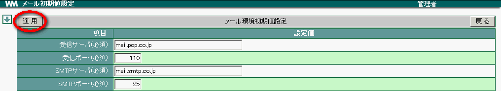

メールでは、個人のアカウントを設定する際の初期値を設定することができます。ここでの設定は、メニューの［メール］画面で［詳細設定］をクリックし、表示される「アカウント」に反映されます。
メニューの をクリックします。
をクリックします。
各項目を設定し、 OK をクリックします。

確認メッセージが表示されたら、 OK をクリックします。
15. グラフ表示色
17. メニュー
Enter search terms or a module, class or function name.
 をクリックします。
をクリックします。 をクリックします。
をクリックします。